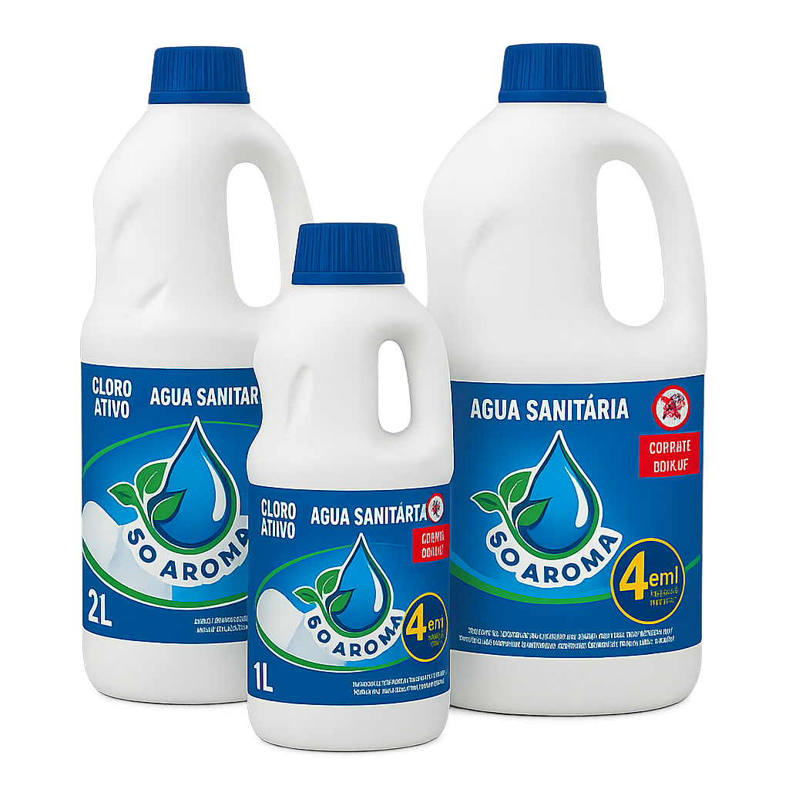

Água Sanitária
Para uma limpeza completa e segura, a água sanitária é a escolha ideal. Ela desinfeta, elimina germes e bactérias, e pode ser usada em várias superfícies, além de ajudar a remover manchas em roupas, garantindo um ambiente mais limpo e saudável.
Disponível em embalagens de: 1L, 2L e 5L.
Downloads
